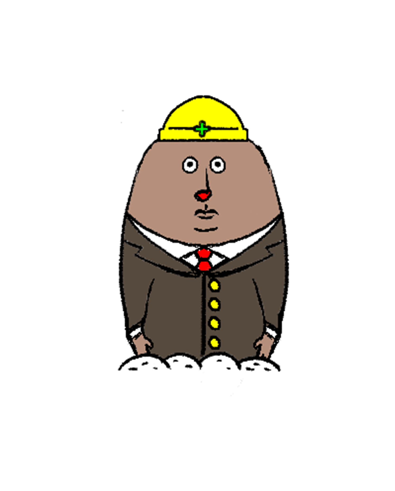
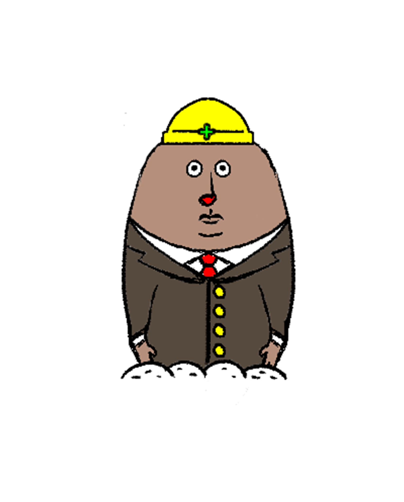

山田猫氏
世界を旅するクールガイ。
思わぬアクシデントにあっても
顔色が変わることは稀。
周りからは畏敬の念さえ抱かれている。
ところが、
当の本人はただマイペースなだけ。
蛙氏
猫氏の数少ない友人。
猫氏にも負けぬマイペースの持ち主。
いつも笑っているように見える目元は
優しさの証。
兎氏
猫氏の数少ない友人。
図書館を管理している。
猫氏が必要とする書物を
言われるまでもなく
運んでくる。
Mr.ゴリラ
猫氏の前に立ちふさがる強敵。
格闘技団体キングエイプの絶対王者。
１０００万ゴリラパワーの持ち主。
Dr.チュウ
世界各地に暗躍する犯罪組織
ネズネズ団の天才科学者であり、
猫氏の宿敵。
不眠不休で秘密兵器を開発しており、
目元にはいつもくまがある。
モグ男氏
猫氏が道に迷ったとき突如として現れ、
進むべき道を示してくれる。
ただし、
支払う金額によってコースが異なり、
ケチケチすると
そのまま去ってしまうことも…
ニャオス看守長
地獄の一丁目刑務所で
看守長をしている。
捕まったことを後悔させるほどの
恐ろしい拷問はあまりにも有名。
戦闘員
ネズネズ団の下級戦闘員。
ニャオス看守長の拷問に屈し、
あることないこと、
べらべらしゃべる忠誠心のなさ。
ギャング・クック
ネズネズ団を目の敵にしている
町のギャング。
蛇をも黙らせる恐ろしい目つきだが、
ひよこんズからは慕われている。
ひよこんズ
ギャング・クックを尊敬する、
ひよこたち。
ギャング・クックの目つきを
真似しているが、本当はつぶらな瞳。
パンプキン
猫氏に屠られた
ネズネズ団の怨霊が
かぼちゃに乗り移り、
夜の一族として蘇る！
野獣
月明かりの森に出没する、
夜の一族。
視線を感じたら奴がいる！
フランケンC
夜の一族のなかで
特に危険なのが、こいつ。
倒しても、倒しても蘇る
機械のボディを持つ。
フランケンCのCは「cat」のCである。
虎氏
寅年といえば、このひと。
猫氏とは遠い親戚である。